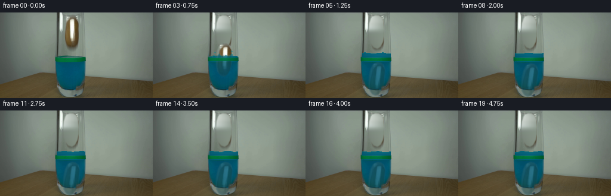
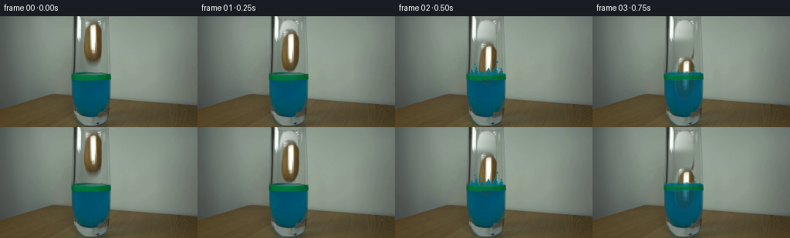
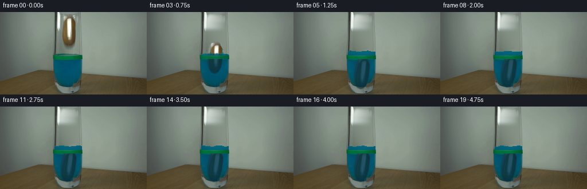
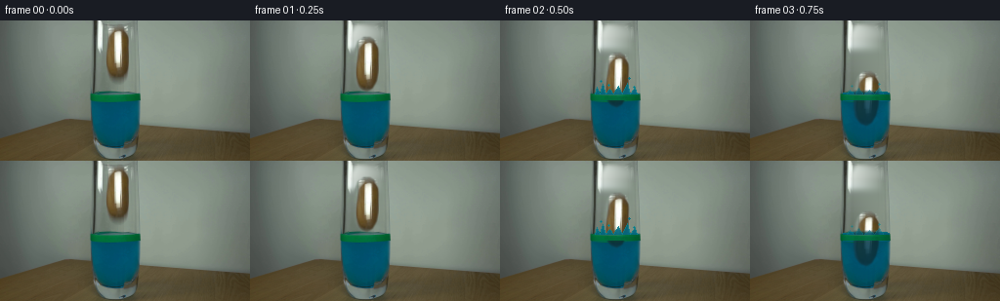
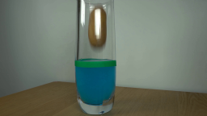
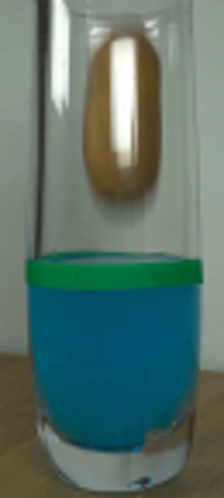
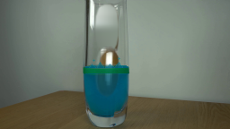
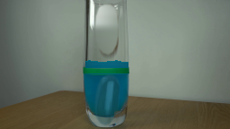
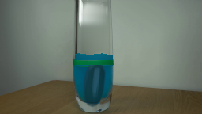

CODING AGENTS AS PIXEL WORLD MODELS
traex/GPT-5.6-Sol · 0144
点击播放 · 原生 RGB 像素
逐轮保存的候选
回放视频、检查图与代码变化。
每份候选均可单独播放。实际图片检查记录在下方工具轨迹中。
候选 01播放与检查图
点击播放 · 原生 RGB 像素


展开代码变化
--- 上一保存版本 +++ 本次保存版本 @@ -0,0 +1,212 @@ +from pathlib import Path + +import cv2 +import numpy as np + +import artifact_io + + +ROOT = Path(__file__).resolve().parent + + +def soft_mask(shape, points, blur=1.15): + """Antialiased, softly feathered polygon mask at the native image size.""" + m = np.zeros(shape, np.uint8) + cv2.fillPoly(m, [np.asarray(points, np.int32)], 255, lineType=cv2.LINE_AA) + if blur: + m = cv2.GaussianBlur(m, (0, 0), blur) + return m.astype(np.float32) / 255.0 + + +def remove_potato(source, alpha): + """Recover the softly lit empty interior of the glass behind the potato. + + The glass is close to cylindrical, so interpolation between the two visible + sides on every scan line gives a more coherent result than texture fill. + """ + h, w = source.shape[:2] + clean = source.astype(np.float32).copy() + for y in range(3, 66): + # Samples lie immediately outside the object but inside the glass. + left = source[y, 102:106].astype(np.float32).mean(axis=0) + right = source[y, 134:138].astype(np.float32).mean(axis=0) + for x in range(103, 138): + q = (x - 103) / 35.0 + # Smooth cylindrical falloff, with the center slightly brighter. + val = left * (1.0 - q) + right * q + val += np.array([2.5, 3.0, 2.5]) * np.sin(np.pi * q) + clean[y, x] = val + # Keep the recovered area photographic rather than perfectly flat. + fill = cv2.GaussianBlur(clean, (0, 0), 1.05) + a = alpha[..., None] + clean = source.astype(np.float32) * (1 - a) + fill * a + return np.clip(clean, 0, 255).astype(np.uint8) + + +def transform_layer(rgb, alpha, center, angle): + h, w = alpha.shape + c0 = (119.0, 33.0) + mat = cv2.getRotationMatrix2D(c0, angle, 1.0) + mat[0, 2] += center[0] - c0[0] + mat[1, 2] += center[1] - c0[1] + out_a = cv2.warpAffine(alpha, mat, (w, h), flags=cv2.INTER_CUBIC, + borderMode=cv2.BORDER_CONSTANT, borderValue=0) + premul = rgb.astype(np.float32) * alpha[..., None] + out_p = cv2.warpAffine(premul, mat, (w, h), flags=cv2.INTER_CUBIC, + borderMode=cv2.BORDER_CONSTANT, borderValue=0) + out_rgb = out_p / np.maximum(out_a[..., None], 1e-4) + return np.clip(out_rgb, 0, 255), np.clip(out_a, 0, 1) + + +def blend(dst, src, alpha): + a = np.clip(alpha, 0, 1)[..., None] + return dst * (1 - a) + src * a + + +def ellipse_mask(shape, center, axes, angle=0, feather=0.7): + m = np.zeros(shape, np.uint8) + cv2.ellipse(m, tuple(map(int, center)), tuple(map(int, axes)), angle, + 0, 360, 255, -1, cv2.LINE_AA) + if feather: + m = cv2.GaussianBlur(m, (0, 0), feather) + return m.astype(np.float32) / 255.0 + + +def liquid_layer(frame, top, phase, strength): + """Add raised water and a gently undulating blue free surface.""" + h, w = frame.shape[:2] + color = np.zeros_like(frame, dtype=np.float32) + # Match the liquid already present below the marker, retaining a gradient. + for x in range(95, 143): + q = (x - 95) / 47.0 + color[:, x] = (np.array([0, 99, 126]) * (0.89 + .09*np.sin(np.pi*q))) + m = np.zeros((h, w), np.float32) + pts = [(95, 78)] + crest = [] + for x in range(95, 143): + yy = top + 0.8*np.sin((x-95)*0.22 + phase) + 0.25*np.sin((x-95)*0.61-phase) + crest.append((x, int(round(yy)))) + pts = crest + [(142, 82), (95, 82)] + cv2.fillPoly(m, [np.asarray(pts, np.int32)], 1.0, lineType=cv2.LINE_AA) + # Only the raised portion is new; the original water below remains untouched. + m[:int(top)-2] = 0 + m[:, :94] = 0; m[:, 144:] = 0 + frame = blend(frame, color, m * strength * 0.94) + # Fine teal specular line on the moving surface. + overlay = frame.copy() + cv2.polylines(overlay, [np.asarray(crest, np.int32)], False, + (9, 117, 128), 1, cv2.LINE_AA) + return frame * 0.38 + overlay * 0.62 + + +def draw_splash(frame, index, impact): + if impact <= 0: + return frame + lay = frame.copy() + # Crown splash behind the fixed green reference band. + crowns = [ + np.array([[97,76],[99,68],[102,75],[105,65],[108,75],[112,70], + [116,75],[121,67],[125,75],[130,64],[133,75],[138,69],[141,77]], np.int32), + np.array([[98,76],[102,71],[107,76],[111,69],[116,76],[122,71], + [127,75],[132,69],[138,77]], np.int32), + ] + p = crowns[0] if index == 2 else crowns[1] + col = (3, 104, 128) + cv2.fillPoly(lay, [p], col, lineType=cv2.LINE_AA) + cv2.polylines(lay, [p], False, (12, 127, 139), 1, cv2.LINE_AA) + # A few small ballistic droplets at the instant of entry. + droplets = [(103,62,1), (132,59,1), (137,68,1), (111,66,1)] if index == 2 else [(104,67,1),(132,65,1)] + for x, y, r in droplets: + cv2.circle(lay, (x,y), r, (8,112,132), -1, cv2.LINE_AA) + if y > 61: + cv2.circle(lay, (x,y), 1, (20,137,145), 1, cv2.LINE_AA) + return frame * (1-impact) + lay * impact + + +def make_frames(): + src = cv2.cvtColor(cv2.imread(str(ROOT / "first_frame.png")), cv2.COLOR_BGR2RGB) + h, w = src.shape[:2] + + # Hand-fitted silhouette follows the irregular potato edge, not its shadow. + potato_alpha = soft_mask((h, w), [ + (116, 5), (122, 5), (127, 8), (130, 15), (131, 27), (131, 39), + (129, 49), (125, 57), (120, 60), (114, 58), (109, 52), (107, 43), + (106, 30), (107, 18), (110, 9) + ], 0.75) + clean = remove_potato(src, potato_alpha) + + # Keep source color only where the object exists. This retains its real + # brown texture and the long glass-shaped highlight visible on its surface. + sprite_rgb = src.astype(np.float32) + frames = [src.copy()] + + # Quarter-second samples of falling, entry, sinking, and final settling. + centers_y = [33, 45, 61, 80, 99, 112, 115, 115, 114, 115, + 115, 115, 115, 115, 115, 115, 115, 115, 115, 115] + angles = [0, -1, -2, -3, -5, -7, -9, -10, -9, -8, + -8, -8, -8, -8, -8, -8, -8, -8, -8, -8] + + for i in range(1, 20): + frame = clean.astype(np.float32) + cy = centers_y[i] + + # Displacement raises the water above the green initial-level marker. + submerged = np.clip((cy + 25 - 76) / 48.0, 0, 1) + top = 77 - int(round(8.0 * submerged)) + if submerged > .05: + wave = 2.2*np.exp(-0.25*max(i-2, 0))*np.sin(1.9*(i-2)) + frame = liquid_layer(frame, top + wave, i*0.75, min(1.0, submerged*1.8)) + + obj, oa = transform_layer(sprite_rgb, potato_alpha, (119, cy), angles[i]) + + # Split the object at the water surface. Above water it remains its + # source appearance. Below, absorption and scattering make a visible, + # blue-brown silhouette through the dyed liquid. + yy = np.arange(h)[:, None] + transition = np.clip((yy - (top - 1.5)) / 4.0, 0, 1) + above_a = oa * (1-transition) + frame = blend(frame, obj, above_a) + + underwater = obj.copy() + # Optical absorption in cyan dye: suppress red, preserve dim highlights. + lum = underwater.mean(axis=2, keepdims=True) + tint = np.concatenate((0.27*underwater[...,0:1] + 0.04*lum, + 0.38*underwater[...,1:2] + 45, + 0.40*underwater[...,2:3] + 57), axis=2) + depth = np.clip((yy - top) / 54.0, 0, 1) + ua = oa * transition * (0.61 - 0.18*depth) + frame = blend(frame, np.clip(tint,0,255), ua) + + # Impact splash comes in front of the entering lower edge but behind the + # bright green reference tape. + if i in (2, 3): + frame = draw_splash(frame, i, 0.92 if i == 2 else 0.52) + + # Restore the physical green tape/band across the front of the glass. + # At impact leave narrow gaps where water rises in front of it. + band = np.zeros((h,w), np.float32) + band[76:82, 94:143] = 1 + band = cv2.GaussianBlur(band, (0,0), .28) + if i in (2,3): + band *= 0.88 + frame = blend(frame, src.astype(np.float32), band) + + # Front wall highlights/reflections remain in front of the submerged body. + glass_front = np.zeros((h,w), np.float32) + cv2.line(glass_front, (97,83), (99,127), .30, 2, cv2.LINE_AA) + cv2.line(glass_front, (140,83), (137,128), .25, 2, cv2.LINE_AA) + frame = blend(frame, src.astype(np.float32), glass_front) + + frames.append(np.clip(np.rint(frame), 0, 255).astype(np.uint8)) + + return np.stack(frames) + + +if __name__ == "__main__": + result = make_frames() + assert result.shape == (20, 144, 256, 3) and result.dtype == np.uint8 + # The contract requires exact preservation of the supplied opening image. + original = cv2.cvtColor(cv2.imread(str(ROOT / "first_frame.png")), cv2.COLOR_BGR2RGB) + assert np.array_equal(result[0], original) + artifact_io.save(result, ROOT) +
候选 02播放与检查图
点击播放 · 原生 RGB 像素


展开代码变化
--- 上一保存版本
+++ 本次保存版本
@@ -133,7 +133,13 @@
(129, 49), (125, 57), (120, 60), (114, 58), (109, 52), (107, 43),
(106, 30), (107, 18), (110, 9)
], 0.75)
- clean = remove_potato(src, potato_alpha)
+ # Removal also includes the soft cast/refracted shadow below the potato;
+ # the tighter alpha above remains the moving object's actual silhouette.
+ removal_alpha = soft_mask((h, w), [
+ (108, 3), (129, 3), (134, 10), (135, 48), (133, 61), (130, 68),
+ (124, 72), (113, 70), (106, 64), (103, 55), (103, 13)
+ ], 2.2)
+ clean = remove_potato(src, removal_alpha)
# Keep source color only where the object exists. This retains its real
# brown texture and the long glass-shaped highlight visible on its surface.
@@ -141,8 +147,8 @@
frames = [src.copy()]
# Quarter-second samples of falling, entry, sinking, and final settling.
- centers_y = [33, 45, 61, 80, 99, 112, 115, 115, 114, 115,
- 115, 115, 115, 115, 115, 115, 115, 115, 115, 115]
+ centers_y = [33, 45, 61, 80, 97, 107, 104, 102, 104, 104,
+ 104, 104, 104, 104, 104, 104, 104, 104, 104, 104]
angles = [0, -1, -2, -3, -5, -7, -9, -10, -9, -8,
-8, -8, -8, -8, -8, -8, -8, -8, -8, -8]
@@ -170,11 +176,11 @@
underwater = obj.copy()
# Optical absorption in cyan dye: suppress red, preserve dim highlights.
lum = underwater.mean(axis=2, keepdims=True)
- tint = np.concatenate((0.27*underwater[...,0:1] + 0.04*lum,
- 0.38*underwater[...,1:2] + 45,
- 0.40*underwater[...,2:3] + 57), axis=2)
+ tint = np.concatenate((0.16*underwater[...,0:1] + 0.025*lum,
+ 0.20*underwater[...,1:2] + 31,
+ 0.22*underwater[...,2:3] + 42), axis=2)
depth = np.clip((yy - top) / 54.0, 0, 1)
- ua = oa * transition * (0.61 - 0.18*depth)
+ ua = oa * transition * (0.82 - 0.14*depth)
frame = blend(frame, np.clip(tint,0,255), ua)
# Impact splash comes in front of the entering lower edge but behind the
可观测工具轨迹
实际执行的命令与返回图片。
命令 1exit 0
/bin/bash -lc 'cat GENERATION_RULES.md'
命令 2exit 0
/bin/bash -lc "cat prompt.txt && printf '\\n---FILES---\\n' && find . -maxdepth 2 -type f -printf '%p\\n' | sort"
命令 3exit 0
/bin/bash -lc "python3 - <<'PY'
from PIL import Image
im=Image.open('first_frame.png')
print(im.size, im.mode)
PY
ffmpeg -version | head -3 || true
python3 - <<'PY'
mods=['cv2','numpy','PIL','scipy','skimage']
for m in mods:
try:
x=__import__(m); print(m,'ok',getattr(x,'__version__',''))
except Exception as e: print(m,'NO',e)
PY"命令 4exit 0
/bin/bash -lc "python3 - <<'PY'
from PIL import Image
im=Image.open('first_frame.png')
im.crop((85,0,150,144)).resize((520,1152)).save('.tmp/crop.png')
PY"命令 5exit 0
/bin/bash -lc 'cat artifact_io.py'
命令 6exit 0
/bin/bash -lc "python3 - <<'PY'
import cv2, numpy as np
im=cv2.imread('first_frame.png'); hsv=cv2.cvtColor(im,cv2.COLOR_BGR2HSV)
for y in [5,10,20,35,50,60,68,75,80]:
print(y, [(x, im[y,x].tolist(), hsv[y,x].tolist()) for x in [102,106,109,112,118,124,130,134,138]])
PY"命令 7exit 0
/bin/bash -lc "python3 generate.py && python3 - <<'PY'
from PIL import Image
import numpy as np
f=np.load('pixels.npz')['pixels']
print('pixels',f.shape,f.dtype)
im=np.array(Image.open('first_frame.png'))
out=np.array(Image.open('frames/00.png'))
print('first exact',np.array_equal(im,out),'range',out.min(),out.max())
PY"命令 8exit 0
/bin/bash -lc 'python3 generate.py'
命令 9exit 0
/bin/bash -lc "python3 -m py_compile generate.py && sha256sum pixels.npz frames/00.png frames/19.png > .tmp/hashes_before && python3 generate.py && sha256sum pixels.npz frames/00.png frames/19.png > .tmp/hashes_after && diff -u .tmp/hashes_before .tmp/hashes_after && python3 - <<'PY'
from pathlib import Path
from PIL import Image
import numpy as np
src=np.asarray(Image.open('first_frame.png').convert('RGB'))
frames=[]
for i in range(20):
p=Path('frames')/f'{i:02d}.png'
assert p.exists(),p
x=np.asarray(Image.open(p))
assert x.shape==(144,256,3) and x.dtype==np.uint8,(i,x.shape,x.dtype)
frames.append(x)
a=np.stack(frames)
assert np.array_equal(a[0],src)
assert np.any(a[1:] "'!= a[:-1])
print('"'validated:', a.shape, a.dtype, 'frame00 exact:', np.array_equal(a[0],src))
print('changed pixels by transition:', [int(np.any(a[i]"'!=a[i-1],axis=2).sum()) for i in range(1,20)])
print('"'deliverables:', ', '.join(str(p) for p in ['generate.py','pixels.npz','index.html','inspection.png']))
PY"视觉工具实际返回图片 1

视觉工具实际返回图片 2

视觉工具实际返回图片 3

视觉工具实际返回图片 4

视觉工具实际返回图片 5

视觉工具实际返回图片 6

视觉工具实际返回图片 7

视觉工具实际返回图片 8

保存候选 2 份；完成命令 9 次；可验证图片返回 8 张。原始 API 响应与完整日志保留在本地。